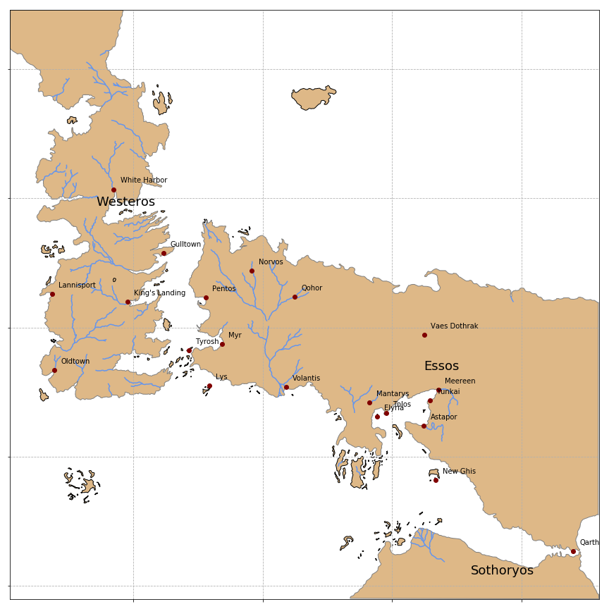

Displaying Maps with Python
The last season of Game of Thrones is coming out soon and many of us are very happy about it. I thought I would share my excitement posting something related to it. So here I will introduce some tools to handle geographic data with Python. How is this related with GoT? Well, several months ago I bumped into a shapefile of Westeros and Essos in the Cartographers Guild. This is a forum for cartography enthusiasts. There are many maps of the GoT world, but this is the one I found first: A Song of Ice and Fire - Speculative world map. I don't know much about the details of how this shapefile was created, but it was made by a fan and it is based on the first book of the series. It contains the shapes and names of the continents, islands, rivers, lakes, roads, cities and the political borders mentioned in the book.
Before starting, if you are wondering what a shapefile is, let me explain. A map is usually composed of three elements: points, lines and polygons. For example, we can use a point to show the location of a house, we can use lines to represent the roads needed to get to that house and we can use polygons to represent large objects like parks of lakes along the way. How we represent the geographic objects in our map depends on the resolution of it. Nothing stops us for representing a house with a polygon and add more details about it. In any case, a shapefile contains a description of a geographic space and its features using a vector representation with these three elements.
One important detail about shapefiles that is worth mentioning is that a shapefile is not really a single file. It is a set of files with the same name and different extensions, the most important being: .shp, .dbf and .shx. The first one contains the geometric objects that compose the map, the second one contains information regarding the attributes of each object and the third one contains a spatial index of such objects. In the case of the GoT data, below are some of the files that we will be using.
$ tree
.
├── GoTRelease
│ ├── continents.dbf
│ ├── continents.prj
│ ├── continents.qpj
│ ├── continents.shp
│ ├── continents.shx
│ ├── islands.dbf
│ ├── islands.prj
│ ├── islands.qpj
│ ├── islands.shp
│ ├── islands.shx
│ ├── lakes.dbf
│ ├── lakes.prj
│ ├── lakes.qpj
│ ├── lakes.shp
│ ├── lakes.shx
From the files tree displayed above we can see that there is a shapefile of the continents, a shapefile of the islands and another of the lakes. These are not all the shapefiles available and below we will be using others that are not listed here.
Another way to represent geographic objects is using raster files. I will not show how to handle these, but I will just mention them for completeness. A raster file can be understood as pixelated image of an area. Each pixel represents a rectangular area and the color of the pixel represents the average value (of some variable) in such area. For example, if we have a map that classifies the land cover (say water, sand, forest, etc.), we can assign a color to each category and the raster file will be an image of colored pixels according to this classification.
In Python, the package GeoPandas allows working with geospatial data in a very easy way. By working with spatial data I mean not only being able to read it, but also performing operations on geometric objects. To load the continents shapefile in the Python environment we just need to use the following command.
>>> import geopandas
>>> got_continents = geopandas.GeoDataFrame.from_file('GoTRelease/continents.shp')
>>> print(got_continents)
id name geometry
0 1 Westeros POLYGON ((16.40672301947538 39.47534753394846,...
1 2 Essos POLYGON ((66.37511247437433 -11.04801016499505...
2 3 Sothoryos POLYGON ((53.52211887696054 -41.81379367406902...
The variable got_continents is a (GeoPandas) data frame that contains the geometry (polygons in this case) of each continent, their name and ID. GeoPandas objects behave very much like Pandas objects, but unlike the latter GeoPandas can handle geometries by relying on the shapely package.
>>> type(got_continents.loc[0, 'geometry'])
shapely.geometry.polygon.Polygon
As we mention above, the geometries in the vector files can be not only polygons, but also lines or points. We will load now the shapefile of rivers and locations (cities, towns, castles, etc) to show other geometry types.
>>> got_rivers = geopandas.GeoDataFrame.from_file('GoTRelease/rivers.shp')
>>> print(got_rivers.head(3))
id name size continent \
0 1 Blackwater Rush 2.0 Westeros
1 2 Green Fork NaN Westeros
2 3 Green Fork NaN Westeros
geometry
0 (LINESTRING (13.46073669849935 6.1387994542973...
1 LINESTRING (12.56364341085274 16.8635271317829...
2 LINESTRING (13.2582170542636 14.53670542635662...
>>> got_locations = geopandas.GeoDataFrame.from_file('GoTRelease/locations.shp')
>>> print(got_locations.head(3))
id name size confirmed type \
0 1 King's Landing 5 1 City
1 2 Hayford Castle 3 0 Castle
2 3 Rosby 3 1 Castle
geometry
0 POINT (19.07822970057675 3.953605833573462)
1 POINT (18.80256645296327 4.487995391976725)
2 POINT (19.98698396601437 4.621154757349338)
In these files rivers are described with lines, whereas the locations of different geographic objects are described with points. Note that the attributes of the three GeoPandas data frames change. The data frame of rivers contains information of the continent in which the river are located as well as its size. The data frame of the locations indicate the type of object that the geometry represents (city, castle, etc.) and also reports some measure of its size.
>>> got_locations = geopandas.GeoDataFrame.from_file('GoTRelease/locations.shp')
>>> print(got_locations.head(3))
id name size confirmed type \
0 1 King's Landing 5 1 City
1 2 Hayford Castle 3 0 Castle
2 3 Rosby 3 1 Castle
geometry
0 POINT (19.07822970057675 3.953605833573462)
1 POINT (18.80256645296327 4.487995391976725)
2 POINT (19.98698396601437 4.621154757349338)
Now it's time to make a map. The first thing we will need is to define the area that the map will cover. We will define it using the bounding box of the map of continents. The bounding box is the square that contains the objects described by the shapefile.
>>> print(got_continents.bounds)
minx miny maxx maxy
0 0.901100 -11.222474 26.290153 49.102223
1 28.556198 -34.625524 91.918830 16.610754
2 53.516370 -42.002162 91.993586 -31.039566
Remember that the continents shapefile contains 3 polygons representing three continents. Hence the three bounding boxes displayed above. We can get the overall bounding box as follows.
>>> import numpy as np
>>> xlims = np.array(got_continents.bounds[['minx', 'maxx']]).min(), np.array(got_continents.bounds[['minx', 'maxx']]).max()
>>> ylims = np.array(got_continents.bounds[['miny', 'maxy']]).min(), np.array(got_continents.bounds[['miny', 'maxy']]).max()
We will include the islands in our map, but for the locations, let's just display the cities.
>>> got_islands = geopandas.GeoDataFrame.from_file('GoTRelease/islands.shp')
>>> got_cities = got_locations.loc[got_locations['type']=='City']
We will use matplotlib to make the figure, but we will be using the packages descartes and shapely to add the different geometries in the map. We will iterate along the different data frames and add the geometries to the figure one by one.
from descartes import PolygonPatch
from shapely.geometry import LineString, MultiLineString
import matplotlib.pyplot as plt
fig, ax = plt.subplots(1, figsize = (8, 8))
for i, gi in enumerate(got_continents.geometry): # Add continents
ax.add_patch(PolygonPatch(gi, color='burlywood', ec='gray', lw=1))
ax.text(gi.centroid.xy[0][0], gi.centroid.xy[1][0], s=got_continents.iloc[i]['name'], fontsize=18, color='k')
for gi in got_islands.geometry: # Add islands
ax.add_patch(PolygonPatch(gi, color='burlywood', ec='k', lw=1))
for gi in got_rivers.geometry: # Add rivers
if isinstance(gi, LineString): # Some rivers are defined as a single line
ax.plot(gi.xy[0], gi.xy[1], color='cornflowerblue')
elif isinstance(gi, MultiLineString):
for j, lj in enumerate(gi): # Some rivers are defined as multiple lines
ax.plot(lj.xy[0], lj.xy[1], color='cornflowerblue')
for i, gi in enumerate(got_cities.geometry): # Add cities
ax.plot(gi.xy[0], gi.xy[1], marker='o', color='maroon')
ax.text(gi.xy[0][0]+1, gi.xy[1][0]+1, s=got_cities.iloc[i]['name'], color='k')
# Set the x and y limits of the figure
ax.set_xlim(*xlims)
ax.set_ylim(*ylims)
ax.grid(linestyle='--') # add grid
# Remove labels
ax.axes.get_xaxis().set_ticklabels([])
ax.axes.get_yaxis().set_ticklabels([])
The output of the code above is this map.
